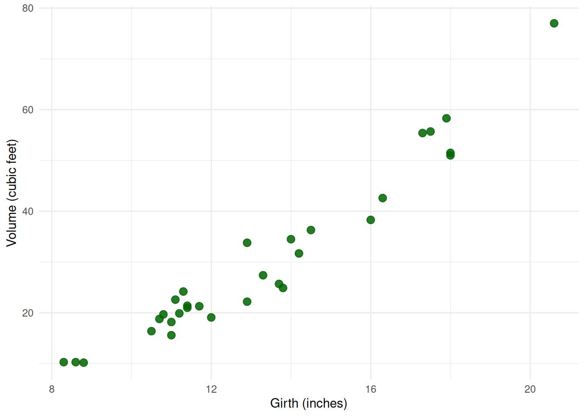
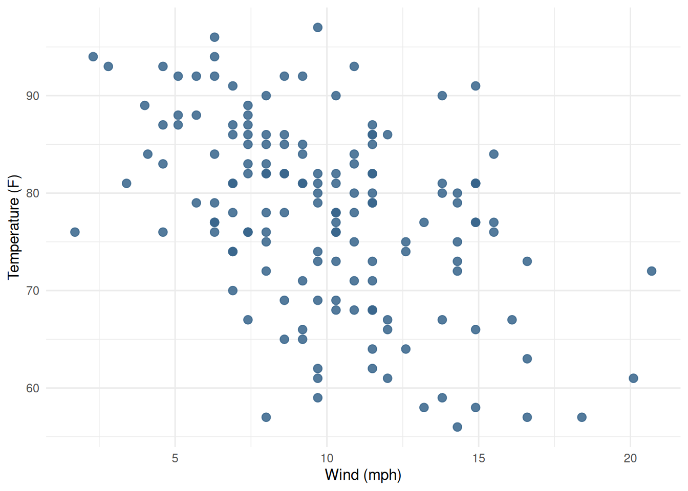
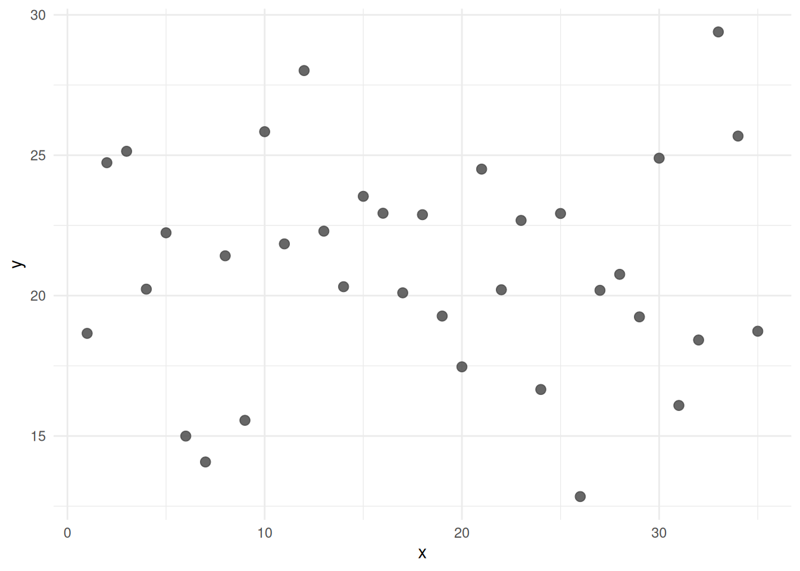

Quiz 13
STAT 109: Introductory Biostatistics
Quiz 13
Quiz 13 practice problems
These practice problems cover Lecture 35 and Lecture 36:
- reading scatterplots for form, direction, and strength,
- Pearson correlation and simple linear regression,
- interpreting slope/intercept and model predictions,
- residuals, training vs test MSE and
R^2, - interpreting confidence intervals and prediction intervals from R output.
This quiz is primarily conceptual and interpretation-focused.
Key ideas + interpretation templates
I had more topics in my lecture slides than you need for this quiz. Here is a short summary of the ideas you’ll need and some recipes for interpretation in context.
Correlation + scatterplot reminders
- First look at the scatterplot: describe form, direction, strength.
- Compute Pearson correlation only when form is roughly linear.
- Pearson correlation is unitless.
- Sign gives direction:
- \(r > 0\): positive
- \(r < 0\): negative
- Size gives strength:
|r|near 1: very strong linear relationship (perfect line at|r| = 1)|r|near 0: weak to no linear relationship
Prediction equation template
For simple linear regression, write:
\[ \hat{y} = b + mx \]
where:
- \(\hat{y}\) = predicted outcome variable, what we want to predict
- \(b\) = intercept (the value of \(\hat{y}\) when \(x=0\).
- \(m\) = slope (the change in \(\hat{y}\) for a one unit increase in \(x\))
- \(x\) = explanatory variable value, what we have to predict from
Interpretation templates:
- Slope \(m\): for each additional 1 unit increase in \(x\), the predicted value \(\hat{y}\) changes by \(m\) units.
- Intercept (b): predicted value \(\hat{y}\) when \(x=0\).
Residuals
\(y-\hat{y}\) for every point \((x, y)\) in our dataset and the prediction model \(\hat{y}=b+mx\)
one residual is the difference between an actual value of \(y\) and our model’s prediction
The method of “least squares” finds the values of \(m\) and \(b\) so that the sum of squared residuals is as small as possible (e.g. our line is as close to the data points as possible where close is the total squared distance from the points to the line.
MSE and \(R^2\) templates
- MSE (test): average squared prediction error on new data; lower is better.
- \(R^2\) (test): proportion of variability in new \(y\) explained by our linear model in x; between 0 and 1 with higher being better.
- Prefer test metrics over training metrics to obtain unbiased estimates of model characteristics on new data.
Instructions
- Work without notes first, then check your work.
- For multiple-choice questions, choose the best single answer.
- Unless stated otherwise, interpret intervals at 95% confidence.
Part A: Scatterplot and correlation concepts
A1.
Use the scatterplot below (from a sample of tree measurements):
A1(a). Best description of this scatterplot:
- Linear, negative, weak
- Linear, positive, moderate-to-strong
- Curved, no clear direction
A1(b). If the relationship is roughly linear in the scatterplot, which value of Pearson correlation r is the best guess?
- \(r = -0.76\)
- \(r = 0.08\)
- \(r = 0.93\)
A2.
Use the scatterplot below (wind speed vs air temperature on sampled days):

A2(a). Best description of this scatterplot:
- Linear, negative, weak-to-moderate
- Linear, positive, strong
- Curved, no clear direction
A2(b). If you summarize with Pearson correlation, the best guess for r is:
- \(r = -0.42\)
- \(r = -0.94\)
- \(r = 0.31\)
A3.
Use the scatterplot to answer the questions below:

A3(a). Best description:
- Linear, positive, strong
- Linear, negative, moderate
- No clear linear relationship
A3(b). Best guess for Pearson correlation r:
- \(r = 0.03\)
- \(r = 0.78\)
- \(r = -0.71\)
Part B: Linear model from Example 1 (trees)
Suppose R output from lm(Volume ~ Girth, data = trees) is:
Call:
lm(formula = Volume ~ Girth, data = trees)
Coefficients:
(Intercept) Girth
-36.943 5.066B1.
Write the prediction equation by hand using the lm coefficients.
B2.
Interpret the slope 5.066 in the context of Girth and Volume. (hint: look at the template interpretations)
B3.
Interpret the intercept -36.943 the context of Girth and Volume. (hint: look at the template interpretations)
B4.
Use the prediction equation from B1 to compute predictions:
- at
Girth = 10, and - at
Girth = 16.
Part C: Residuals, train/test MSE, and test (R^2)
C1.
A residual is:
predicted - observed
observed - predicted
observed / predicted
C2.
Why is training MSE often optimistically biased?
- It is measured on the same data used to fit the model.
- Test sets always have data-entry errors.
- MSE cannot be computed on training data.
C3.
Which metric is usually better for expected performance on new data?
- Training MSE (mean squared errors on the dataset used to build the model)
- Test MSE (mean squared errors on a dataset NOT used to build the model)
C4.
A model has test $R^2= 0.64$. The best interpretation of this is:
- 64% of variability in
xis explained byy.
- About 64% of variability in test-set
yis explained by linear prediction fromx.
- 64% of individual predictions are exactly correct.
Part D: Linear model
A linear model from example 2 (wind vs temperature) has R output:
lm(Temp ~ Wind, data = aq)
Coefficients:
(Intercept) Wind
96.872 -1.874D1.
Use the R output to write down the prediction equation for Temp using Wind.
D2.
Use your equation from D1 to predict Temp at Wind = 8 and Wind = 15.
Part E: Mean-response CI vs individual prediction interval
E1. Example 1 (trees), Girth = 10
Suppose:
predict(..., interval="confidence")gives(11.2, 16.3)predict(..., interval="prediction")gives(3.5, 23.9)
Write a one sentence interpretation of each of these intervals in context. Be sure to mention girth, Volume and whether the interval is for a mean or individual. Use the template interpretations as a guide.
E2. Example 1 (trees), Girth = 16
Suppose Girth=16 was used in the linear model of example 1 and the following interval estimate were produced using the predict function:
- confidence interval:
(41.0, 47.2) - prediction interval:
(31.5, 56.6)
Write a one sentence interpretation of each of these intervals in context. Be sure to mention Girth, Volume and whether the interval is for a mean or individual. Use the template interpretations as a guide.
E3. Example 2 (wind vs temperature), Wind = 8
Suppose Wind=8 was used in the linear model of example 2 and the following interval estimates were produced using the predict function:
- confidence interval:
(79.8, 84.0) - prediction interval:
(69.2, 94.5)
Write a one sentence interpretation of each of these intervals in context. Be sure to mention Wind, Temp and whether the interval is for a mean or individual. Use the template interpretations as a guide.
E4. Example 2 (wind vs temperature), Wind = 15
Suppose Wind=15 was used in the linear model of example 2 and the following interval estimates were produced using the predict function:
- confidence interval:
(66.4, 71.1) - prediction interval:
(55.7, 82.0)
Write a one sentence interpretation of each of these intervals in context. Be sure to mention Wind, Temp and whether the interval is for a mean or individual. Use the template interpretations as a guide.
Reuse
Creative Commons Attribution-NonCommercial 4.0 International(View License)